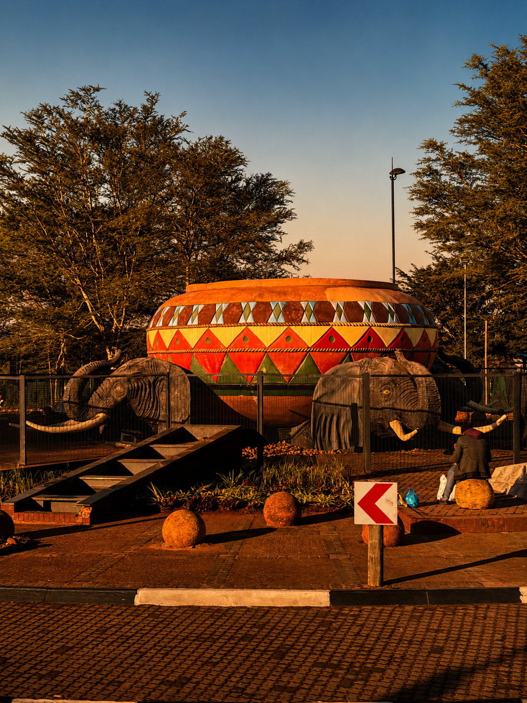
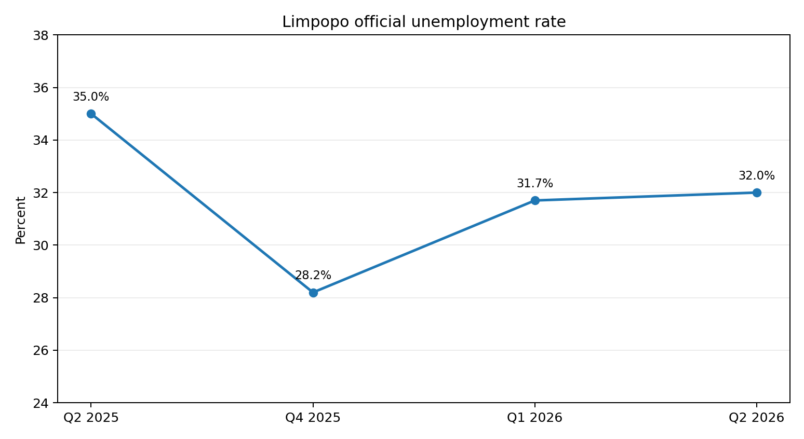
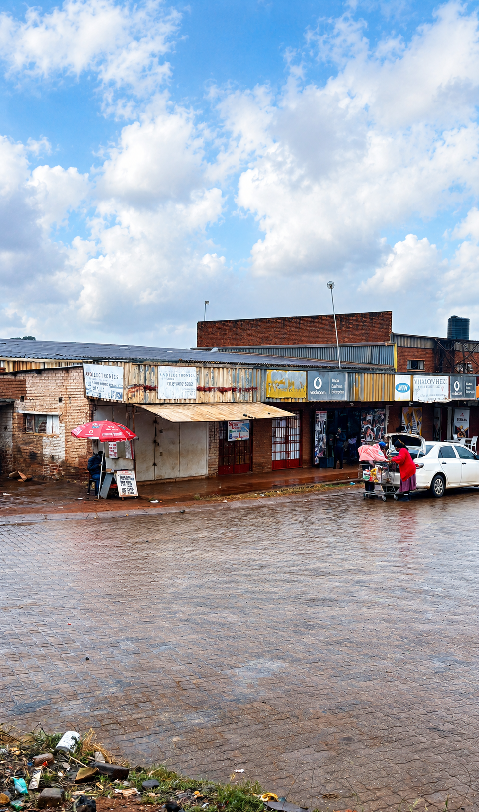

6.37m
Limpopo population · 2026
Stats SA estimates approximately 6.37 million people in Limpopo in 2026.
Limpopo is often discussed through poverty, rurality and infrastructure backlogs. That description is incomplete. The province also contains active agriculture, mining, trade, manufacturing potential, local enterprise and communities whose economic activity is not always fully visible to formal financial systems.
Thohoyandou gives CIAS a specific place to ask a different question: how do we understand financial reliability where livelihoods can be rural, informal, agricultural, remittance-supported and community-based at the same time?

Limpopo gives CIAS a provincial environment where economic activity is spread across towns, villages, farms, mines, roadside trade, households and remittance networks. The research problem is therefore not simply “poverty”. It is whether formal systems accurately see the economic behaviour that already exists.
Stats SA estimates approximately 6.37 million people in Limpopo in 2026.
Limpopo has the highest provincial proportion of children younger than 15 in the 2026 mid-year estimates.
The rate rose slightly from 31.7% in Q1 2026, but remained three percentage points below Q2 2025.
The wider measure shows that labour-market exclusion remains considerably deeper than the official rate alone.

The official rate was 35.0% in Q2 2025, fell to 28.2% by Q4 2025, then increased to 31.7% in Q1 2026 and 32.0% in Q2 2026.
This is not a simple story of permanent decline. CIAS must be able to distinguish structural vulnerability from temporary economic movement.
A frequently cited provincial agriculture study stated that roughly 89% of Limpopo's population could be classified as rural.
That source dates to 2012 and should therefore be treated as historical context only, not a current 2026 statistic.
Recent official sources still describe Limpopo as one of South Africa's more rural provinces, but the exact current rural share should not be presented as 89% without an updated measure.
Rural households can participate in farming, informal retail, services, remittances, transport, tourism, construction and seasonal work.
A formal system may see fragmented income even where a household experiences long-term economic continuity.
The provincial government stated that water access had regressed to 64.2%, leaving 35.8% without this necessity and placing additional pressure on municipal infrastructure.
Stats SA's household reporting shows Limpopo households make comparatively high use of open fires and candles as alternatives, illustrating that headline electrification alone does not capture resilience or reliability.
Transport delays, water interruptions, electricity problems or poor roads can disrupt trading days and expenditure patterns.
CIAS should not automatically interpret those disruptions as poor financial discipline.

Limpopo recorded the strongest provincial real GDP growth rate in 2024, alongside gains in finance and business services, personal services, utilities, transport and communication, manufacturing and trade.
Limpopo's investment agencies identify mining, agriculture, tourism and industrial development as major areas of opportunity.
Some published sector figures on the investment site use older 2020 data, so those numbers should be treated as timeline context rather than current GDP composition.
Limpopo's agricultural, mining and local-enterprise base makes it useful for studying whether economic development can strengthen when local goods, suppliers and productive capabilities are supported rather than treated only as consumption markets.
The research should test where local procurement and production genuinely create resilience and jobs, and where external suppliers remain necessary.
The point is not economic isolation; it is understanding how much value can reasonably remain within local economic systems.
This was the highest provincial share reported in the General Household Survey 2025.
A recurring transfer from a family member working elsewhere may represent dependency, but it can also represent a stable household financial relationship.
CIAS must not collapse those different realities into one risk assumption.
Stats SA reported that among period migrants between 2017 and 2022, the most common provincial migration stream was Limpopo to Gauteng, accounting for 13.4%.
This connects two CIAS research layers directly: economic activity may be generated in Gauteng while household support and obligations remain in Limpopo.
A financial profile built only around the place where income is earned may misunderstand the household economy that income supports.
CIAS should investigate continuity across locations rather than treat mobility as instability.
Thohoyandou is useful because formal stores, transport, government services, schools, households, agriculture and street trade intersect within one regional commercial system.
| Environment | Possible observable signal | Possible meaning | Alternative explanation | Bias risk |
|---|---|---|---|---|
| Street vendor | Repeated stock purchases and daily sales | Business continuity | Seasonal or weather-sensitive demand | Penalising cash activity |
| Agricultural household | Seasonal sales, input purchases and harvest-linked income | Productive economic activity | Normal agricultural seasonality | Misreading seasonal income as instability |
| Remittance-supported household | Recurring transfers from elsewhere | Stable support network | Household dependency | Treating family support as automatic weakness |
| Micro-retailer | Restocking, supplier payments and small recurring customer payments | Economic continuity | Low profit margin | Overvaluing turnover |
| Rural service business | Mobile payments, cash deposits and repeat clients | Established demand | Limited digital record | Digital-data bias |
Poor road conditions can alter travel time, delivery cost, customer movement and supplier reliability.
Water and electricity interruptions can create emergency purchases and abnormal operating costs.
Low digital transaction volume may reflect network access, device cost or user literacy rather than weak economic activity.
Which recurring financial behaviours are visible among traders, farmers and households around Thohoyandou, and which remain undocumented?
How much apparent income volatility is caused by roads, transport, water, electricity or connectivity rather than financial behaviour?
How should CIAS distinguish normal seasonal agricultural income from harmful instability?
When do recurring remittances represent financial continuity, and when do they represent vulnerability?
Which local supply and production relationships strengthen household or micro-business resilience?
What evidence could responsibly describe the continuity of cash-first street businesses without forcing them into digital-only behaviour?
How does Limpopo's unusually young population affect future demand for education, entrepreneurship and financial infrastructure?
How do we prevent rural location, language, remittance reliance or limited digital activity from becoming proxies for financial unreliability?
| Source | Use | Status |
|---|---|---|
| Stats SA — Mid-year Population Estimates 2026 | Limpopo population, age structure and provincial demographic context. | Current primary evidence |
| Stats SA — QLFS Q2 2026 | Official unemployment and labour-underutilisation statistics. | Current primary evidence |
| Stats SA — Economic growth: Limpopo the biggest winner | Provincial real GDP growth and industries contributing to 2024 growth. | Recent primary evidence |
| Limpopo Provincial Government — SOPA 2025 | Water-access and infrastructure context. | Recent primary provincial source |
| InvestSA Limpopo — Main Economic Sectors | Mining, agriculture and investment-sector context. Older figures are treated as timeline data. | Institutional investment source |
| Stats SA — General Household Survey 2025 | Household income sources and Limpopo remittance reliance. | Current primary evidence |
| Stats SA — Internal Migration 2026 | Limpopo-to-Gauteng migration stream. | Current primary evidence |
| Limpopo agriculture study — rurality estimate | Historical 89% rural figure only. | Historical timeline source |